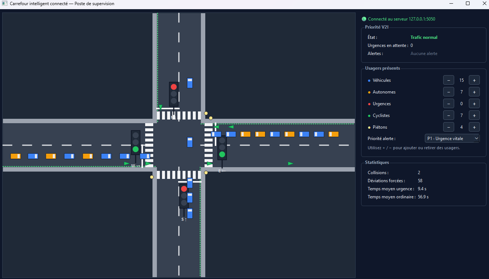

Développer des applications communicantes
1. Contexte de la compétence & situation professionnelle
Dans le cadre de cette SAÉ 3.02, notre situation professionnelle s'est inscrite dans la conception et le développement d'une application logicielle communicante en Python. Le projet consiste en la réalisation d'un simulateur de trafic intelligent (type V2I - Vehicle-to-Infrastructure) utilisant le framework graphique PyQt6. Le cadre a nécessité de structurer un code modulaire pour interagir graphiquement avec des éléments de simulation routière et de gérer les échanges entre les différents composants logiciels.
2. Apprentissages critiques (AC) ciblés
Les apprentissages critiques du référentiel R&T mobilisés et explicités pour cette réalisation sont :
- AC0311 — Analyser et optimiser des applications : Étude de la structure logicielle du simulateur pour garantir une bonne réactivité des interfaces.
- AC0312 — Lire, exécuter, corriger et modifier un programme : Manipulation, débogage et adaptation du code source Python / PyQt6 au sein de l'équipe.
- AC0313 — Choisir les mécanismes de communication adaptés : Mise en place des interactions et des flux de données inhérents à une architecture communicante de type V2I.
- AC0316 — S'intégrer dans un environnement propice au développement et au travail collaboratif : Utilisation rigoureuse de Git et GitHub pour synchroniser le travail des différents membres de l'équipe.
3. Description réflexive de l'activité
Analyse critique de mon travail : En tant que Louise dans le projet, j'ai participé activement à la structuration du code et au développement des composants graphiques sous PyQt6. J'ai veillé à séparer proprement les vues de la logique métier pour faciliter l'évolutivité du simulateur de carrefour.
Méthodologie employée : Approche orientée objet en Python, répartition des tâches au sein de l'équipe et gestion collaborative du code source via des commits réguliers.
Difficultés rencontrées et solutions : La synchronisation de l'affichage graphique dynamique avec les événements de simulation a représenté un défi technique. Nous l'avons résolu en exploitant rigoureusement le système de signaux et de slots de PyQt6 et en menant des phases de tests itératives.
Apports personnels : Ce projet m'a permis de consolider mes compétences en programmation événementielle, en conception d'IHM et en travail d'équipe sur un dépôt distant.
4. Liste des traces et des preuves (vérifiables)
- Lien vers le dépôt Git / commits : Accès au dépôt public du projet hébergé sur GitHub : Dépôt GitHub - carrefour-v2i-pyqt6 (traçabilité des contributions de Louise).
-
Capture d'écran de l'interface / recette réussie :

-
Extraits de code Python sourcés : Extrait de l'implémentation des fenêtres et de la structure PyQt6 développée dans le projet :
class FenetrePrincipale(QMainWindow): """Poste de supervision du carrefour : vue graphique et tableau de bord. Toutes les données affichées arrivent du thread réseau par signaux Qt : aucun widget n'est touché depuis ce thread, conformément à la règle de thread-safety imposée par le projet. """ def __init__(self): """Construit l'interface puis démarre le thread réseau.""" super().__init__() self.setWindowTitle("Carrefour intelligent connecté — Poste de supervision") self.setStyleSheet(STYLE_FENETRE) self.scene = SceneCarrefour() self.vue = QGraphicsView(self.scene) self.vue.setRenderHint(QPainter.RenderHint.Antialiasing) self.vue.setFixedSize(config.LARGEUR_SCENE + 4, config.HAUTEUR_SCENE + 4) self.vue.setStyleSheet("border: 1px solid #334155;") panneau = self._construire_panneau_lateral() corps = QHBoxLayout() corps.addWidget(self.vue) corps.addWidget(panneau) conteneur = QWidget() conteneur.setLayout(corps) self.setCentralWidget(conteneur) self.thread_reseau = ThreadReseau(config.SOCKET_SERVEUR_HOTE, config.SOCKET_PORT) self.thread_reseau.etat_recu.connect(self._sur_etat_recu) self.thread_reseau.statut_connexion.connect(self._sur_statut_connexion) self.thread_reseau.info_recue.connect(self._sur_info_recue) self.thread_reseau.start()